bootcher scaffolds a self-contained project — one bootc image with a security baseline you own and edit — then drives the lifecycle: build the container, turn it into a bootable disk image, and roll subsequent updates to running devices.

bootcher init stamps out a self-contained project — one
bootc image with a security baseline that's yours to edit.
bootcher provision builds the image and turns it into a
bootable disk, ready to flash and boot.
bootcher deploy rebuilds and pushes the update to your
running devices, then upgrades them in place.
bootcher picks the path automatically from your project config.
Push straight to devices on your network over your existing SSH connection. Everything rides the secure tunnel, so it works out of the box — ideal for a workshop bench or an air-gapped LAN.
Push to a container registry and point devices at it. Updates become genuine over-the-air: ship a release from your machine or a CI runner and devices pull on their own.
# scaffold a new project bootcher init my-os cd my-os # create a bootable disk bootcher provision # roll updates to your devices bootcher deploy